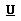

Название
Форматирование текста — Форматирование текста определяет, как ваш текст будет выглядеть в вашем документе.
Полужирный, подчеркнутый, зачеркнутый, курсив
Чтобы сделать тескт жирным, нажмите
 на панели инструментов
на панели инструментовЕсли вы хотите сделать тескт курсивом, нажмите

Для подчеркивания, нажмите 
И чтобы зачеркнуть, нажмите

Нажатые кнопки подсвечиваются. Если вы хотите отключить функцию, нажмите кнопку снова.
Стили
Легко испортить внешний вид текста, применив много разного форматирования. для того, чтобы легко сделать форматирование во всем тексте единообразным, применяйте стили. Каждый стиль содержит набор форматирования, предопределенный разработчиком сайта.
Выравнивание текста
Чтобы выровнять текст по левому краю, нажмите
 на панели инструментов
на панели инструментовДля выравнивания текста по правому краю, нажмите

Для выравнивания текста центру, нажмите
Чтобы выровнять текст по ширине
 .
.
Меню Форматирование
Еще одной очень важной функцией, которую вы будете использовать, является меню Форматирование панели инструментов.
Форматирование используется для структурирования вашего текста. Например, если вы хотите начать новую категорию или подкатегорию, выберите соответствующий пункт из меню форматирование. Доступные варианты форматирования зависят от дизайна сайта и задаются разработчиком сайта.